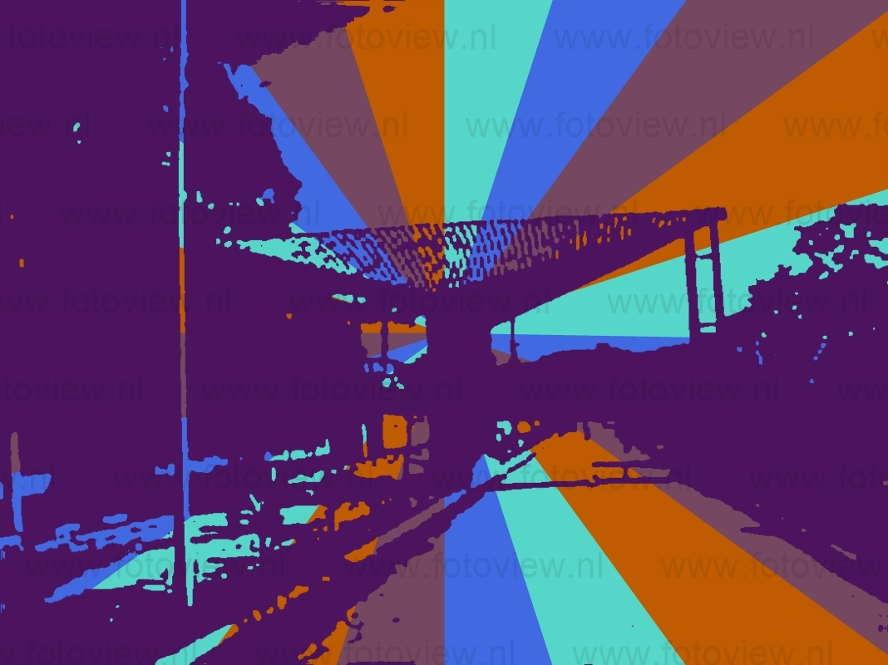

Pedro de Toledo recebeu seu primeiro impulso em 1912 coma chegada da Estrada de Ferro Sorocabana, que veio facilitar o se desenvolvimento, principalmente no setor da agricultura que teve por onde escoar os seus produtos. Nesta época, o nome do município era Parada de Carvalho, e depois Alecrim pertencia à Comarca de Prainha, (atual Miracatu). Com a sua emancipação, em 9 de abril de 1949, passa a chamar-se Pedro de Toledo em homenagem ao estadista, diplomata e ex-governador paulista da década de 30. Hoje Pedro de Toledo recebe o seu segundo impulso e apresenta fortes tendências ao desenvolvimento do turismo sustentável, uma vez que 75% dos seus 631 km2 são áreas de preservação ambiental.
